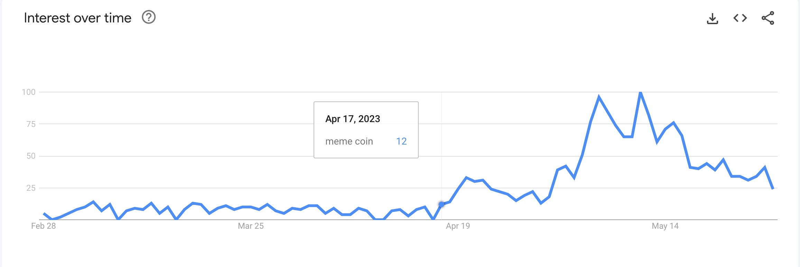

Context
As of May 20, 2023, there are 706 meme coins listed on Coinmarketcap.
What is a meme coin?
A meme coin is a cryptocurrency that doesn’t take itself as seriously as leading digital currencies like Bitcoin and Ethereum. Dogecoin (DOGE) - widely regarded as the first meme cryptocurrency.
A meme coin doesn’t need to have a purpose that is as closely tied to their underlying value, like Bitcoin and Ethereum. A meme coin often seems to have the sole purpose of “going to the moon,” a phrase popularized by Dogecoin’s skyrocketing price in early 2021.
Started on Apr 17, interest in meme coins surged, led by PEPE.

Since Apr 17, Uniswap V3 daily volume peaked on May 6 with $1.2B. And by May 31, the aggregate volume is $30B.
Of $30B, major pools account for 70%, despite only account for 0.6% in total # pool. Major pools are pools consist of 2 in 5 major tokens: ‘WETH’, ‘USDC’, ‘USDT’, ‘WBTC’, and ‘DAI’.
There are more than 2k pools in the minor pools group, which account for 30%. The pools of meme coins are in this group.
Pools in the minor group are mostly pairs of a minor coin with a major coin. Let’s breakdown volume of minor pools in the perspective of swap from or to a minor coin to have a better sense of minor coins share in total minor pools volume.
Volume from and to PEPE is almost 1/4 of total minor pools volume.
In another angle, as PEPE led the rise of meme, 60% of minor pools volume is from and to minor coins which are PEPE or created after PEPE. These coins are likely meme coins.
In this analysis
I’ll answer a few questions below:
Did the increase in popularity of Memecoins attract new traders to the Uniswap platform?
Who are the participants actively engaging with Memecoins on Uniswap? How are the whales behaving, do they have a big impact on the market?
Has the introduction of Memecoins led to an increase or decrease in the number of pairs created on Uniswap? Are there any notable trends or preferences in terms of the Memecoin pairs being created?
Did the rise of Memecoins have any discernible effect on the activity and liquidity of “normal” pairs on Uniswap? Are there any correlations or shifts in trading behavior?
Method
PEPE was created on Apr 14, 2023. As it led the rise of meme, I identify meme coins as all coins created after PEPE.
Traders in this context are users who swap on Uniswap.
Key Highlights
The Rise of Meme
The trading on Uniswap happened in 14 pools, most of them are PEPE related. By far, the biggest pool in term of volume (81%), # swapper, # transaction is PEPE-WETH.
At its peak, meme pools acounted for almost 1/3 in total trading volume per day, more than half in total trader per day, and total transaction per day.
The Meme Effects
New Trader
The rise in total new trader was highly correlated to the rise of % share of meme pools in total new trader. At its peak, meme pools accounted for 2/3 of total new trader.
In a few days that trading activities of meme coins surged, % share of new trader in meme pools rose higher than that in other pools, the difference can be as high as 2x (34% vs. 17%).
Thus, it is safe to say that the mania did attract new trader to Uniswap.
However, it raised another question, which is 👇
How sticky are these meme traders?
- Retention Rate
- % of a cohort return (to swap on Uniswap).
Retention rate of meme traders in the first 3 weeks is 2x of Uniswap average. However, from week 4th, the trend appears to drop faster than Uniswap average.
So meme traders are more sticky than the average trader on Uniswap, at least in their first 3 weeks.
When they returned, what did they return for?
When meme traders returned, more than half of their acitivities were in the meme pools. However, those activities only accounted for 40% in their total return volume.
Of 60% in total return volume which was not in meme pools, almost half was in pools made of 2 in 3 most popular coins: USDC, USDT, and WETH.
Summary
At its peak, meme coins accounted for 2/3 of new trader per day. The meme traders have returned to Uniswap more than the average trader on a cohort basis. And when they return, they return for not only the meme coins but also for the major coins.
Next, let’s examine activities of traders in the meme pools.
Trader of Meme
Who are they?
Looking at volume and # trader by volume per trader, we can see that most of volume is in the buckets > $100K per trader. Meanwhile, most of trader is in the buckets < $1K per trader.
To get better insights, let’s break them down further. Here I use IQR to group and find outliers. The result is meme traders grouped by trader types, separated by volume range, with summary table below.
There are 114K retail traders, account for 85% of total # trader, with $102M in total volume, this is less than volume of the biggest meme trader.
Meanwhile, there are 288 whale traders, with $1.3B in total volume, this is more than the other 3 trader types combined.
Retail, Degen, & Chad Trader
Volume & Age
Trader’s volume & age of 3 trader groups: retail, degen, & chad are quite similar to one another. The most active traders cluster is 6 weeks old or less, range from small to big.
Additionally, the 20-60 weeks old retail traders are noticably less active than the others in term of both volume and # traders.
Behavior
Between degen and retail, what set degen apart from retail are both trade size (i.e. volume per trade) and trade frequency (i.e. # trade per week).
However, between chad and degen, trade size has a more important role than trade frequency in what set chad apart from degen.
Whale Trader
Volume & Age
While whale traders have volume range of $1M - $6M, age range of 2 - 107 weeks old, top 3 most active clusters have a few characteristics below:
$1M - $3M in volume.
2 - 6 weeks old, 39 weeks old, 65 weeks old, & 105 - 107 weeks old.
Blue whale 0xf1d307906edc902dc2c392af2880f43a55d3583a is 2 weeks old, has $115M in total volume, and is the biggest meme trader on Uniswap.
Blue whale 0x5b7cdd3ead9f61a0b4eede5992a25e4400fb2d03 is 106 weeks old, has $15M in total volume, and is the oldest blue whale.
The most active cluster is 39 weeks old with 4 blue whales. Following by the 65 weeks old cluster with 2 blue whales.
The general trend is the older a blue whale is the less volume traded.
Behavior
Blue whales’ trade size are not different than that of whales. However, what set blue whales apart from whales is trade frequency. And 0xf1d307906edc902dc2c392af2880f43a55d3583a becomes the biggest trader by trading more than 1k times per week, the highest frequency, average $50K per trade. A quick check on etherscan shows that this trader is actually a bot which has a lot of MEV transactions.